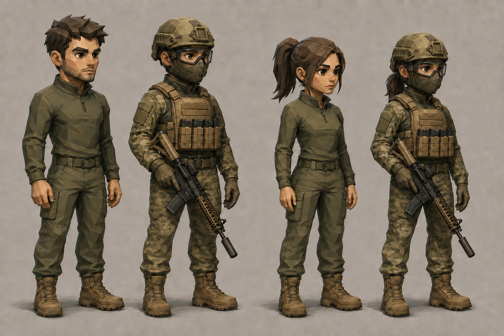

AIRSOFT CLUB GAME · ART TEST 016 · MALE
Один боєць — змінне спорядження
Затверджений напрям: м’який low-poly, поточні пропорції, без кобури на нозі. Нижче — тест посадки окремих PNG-шарів, не фінальний арт гри.
01 · База02 · Захист03 · Спорядження
Ревізія 3: базовий костюм приховується під камуфляжем, волосся — під шоломом; рукави перекривають бокові частини броні. Посадку перевіряємо візуально.
Руки та зброя — окремі шари
Ревізія 4: плечі й передпліччя повертаються навколо ліктів зі сталою довжиною. Тканина плавно згинається на суглобі. Бойові броня й захист голови поки залишаються частиною шару тіла.
Масштаб бою та чорновий рух
Усі бійці складаються з окремих тіла, рук і зброї. Віддача та політ BB — лише перевірка відображення, без розрахунку бою. Фон — нейтральне поле перевірки.
Завантаження зображень…
Затверджений візуальний еталон

Стан pipeline і наступні технічні кроки